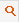
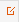
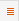

| Manual IGEP: Una guía básica del funcionamiento de IGEP | ||
|---|---|---|
| Anterior | Capítulo 6. Elementos paneles | |
Las pestañas nos indican los modos de trabajo que se disponen para el mantenimiento en el que nos encontramos. Los modos de trabajo no es más que las distintas formas que tenemos de representar la información con la que estamos trabajando.
Siempre aparecen a la derecha de los panelles y solo se componen de una imagen que representa el modo de trabajo. El nombre se muestra como texto alternativo.
Los modos de trabajo utilizados en igep son los siguientes:
-  Modo buscar: Por defecto cualquier mantenimiento nada mas cargarse aparece en este modo de trabajo. A no ser que se indique lo contrario. Aparecerá un panel con los campos que encontremos necesarios para encontrar la información.
-  Modo ficha: Este modo se utiliza para mostrar registros con mucha información. Se accede a él directamente despues de la búsqueda o si preferimos tener un mantenimiento en el cual se ve una vista rápida de los registros mediante una tabla y seleccionar en ella para ver en profundidad los datos.
-  Modo listado: Muestra la información en forma de lista.